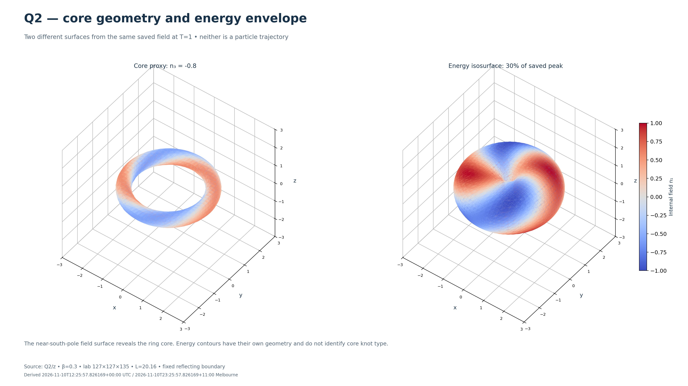
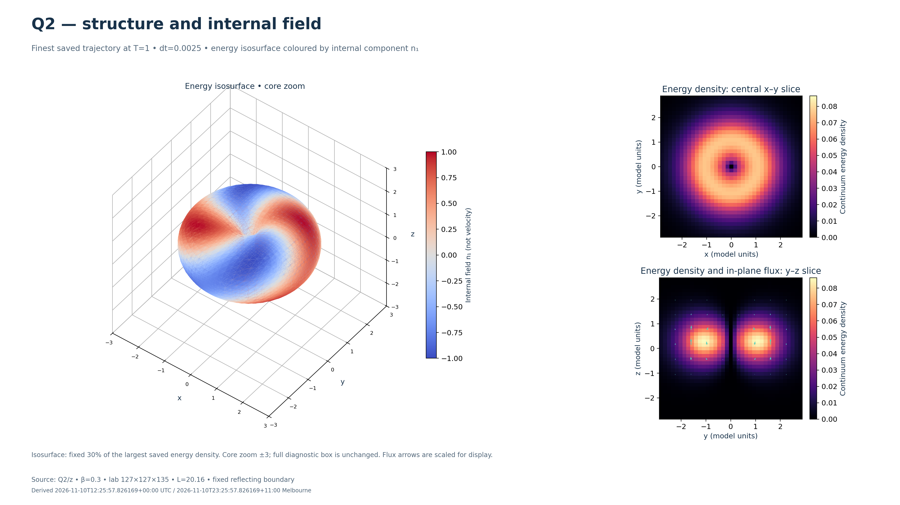
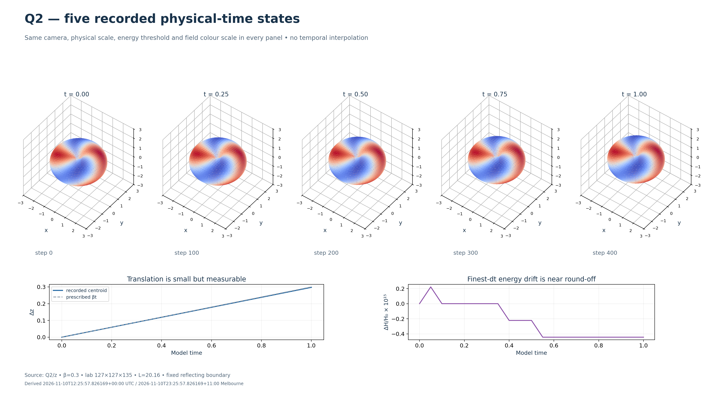
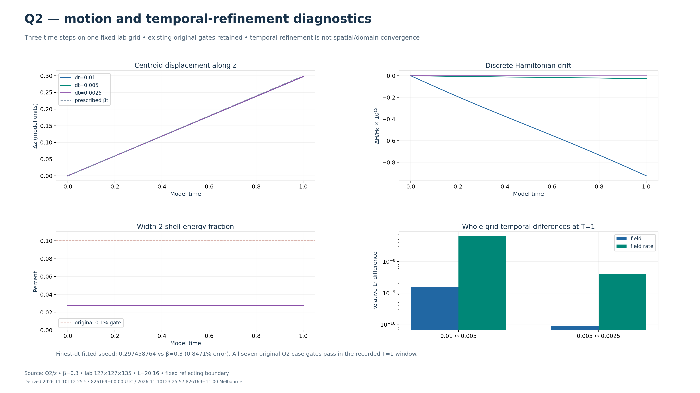

MATTER WAVES · S5-B-006
Q2 detailed analysis
Numerical field structure, recorded motion and time-step diagnostics from the completed T=1 study. Open each PNG at full resolution; open a GIF directly or play it below. This gallery works offline after extraction.
Q2/z · β = 0.3 · finest dt = 0.0025 · 127 × 127 × 135 lab grid · L = 20.16 · dimensionless model units · fixed reflecting boundary layers.
High-resolution static images

The core proxy n₃ = −0.8 and the energy contour show different quantities.
3840 × 2160 PNG · select to open full size
Internal field colour, energy cross-sections and displayed energy flux.
3840 × 2160 PNG · select to open full size
Actual full fields at t = 0, 0.25, 0.5, 0.75 and 1.
3840 × 2160 PNG · select to open full size
Three time steps: 0.01, 0.005 and 0.0025.
3840 × 2160 PNG · select to open full sizeAnimations
Camera orbit
48 views of one frozen T=1 state. Only the camera moves.
Open animation directly ·

Recorded physical motion
Five saved fields. No intermediate fields or interpolation. Loops back to t=0.
Open animation directly ·

Diagnostic history
21 measured observations. These are not 21 saved full-field states.
Open animation directly ·

Reading these views
Colour represents internal field component n₁, not electric charge or velocity. The energy envelope is an isosurface at 30% of the largest continuum energy density across the five saved states. Display cropping does not change the full-box diagnostics. A 4K export adds display pixels, not physical mesh samples.
The original Q2 cases pass their seven finite-window gates. Physical-mesh/domain convergence and isolated long-time stability remain open; these images do not establish charge, quantum spin or an electron model.
Scientific notes and reproduction · Rendering provenance · Checksums